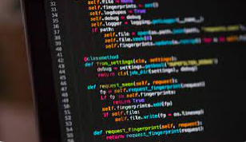
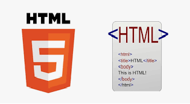
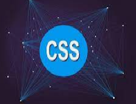
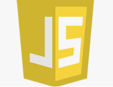
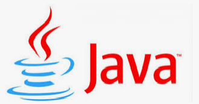
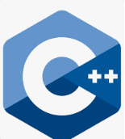
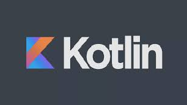

Programming is the process of writing instructions and guidance orders for a computer or any other device, such as DVD players, audio and image receivers in modern communication systems, to guide this device and inform you how to deal with data or how to execute a series of the required business is called algorithm.
The date of software development is the programming language of the only interface between human and computer that is done by writing a set of instructions (instructions(Pass) and a program to implement a specific order, and this language is defined in the name of the programming language.
Today, hundreds of programming languages that vary in their objectives and functionality, have been passed by long-term stages of evolution until the sharply reached today's shape.
For this you find a common java language in developing business applications in various fields in particular areas in the banking sector and various banking services and online payment, so you find giant companies such as suchAmazonAndE-bayRely on Java language significantly.
Word Html is a shortcut forHyper Text Markup Language, And its translation of her Arabic (the language of the super-text encoding) meaning in a simpleHtml It is a set of instructions that are used for hostage webpages.
Has been developed Html by the famous programmer tim berners-Lee1993, with the most important new instructions have been added to facilitate the development of the site development, and were high in 2014 with a versionHTML 5.
Word Css is a shortcut for Cascading Style Sheets, And translated by Arabic (pharmaceutical pages) in a simple sense Css It is a set of code that is used in the page format.
The development was developed Css by the programmer hakon In 1994, to add aesthetic touch on web pages and make the consumption of better information and easier.
You can say that there is no web page withoutHtmlAndCss, For this there is no web developer does not know it well.
Word Sql are the abduction of Structured Query Language, And translated by Arabic (the language of structural queues) a senseSqlIs the language that is used to deal with the databases and manipulated it in different ways.
Features Sql simply stressing its script for its text (Syntax) It is similar to the regular English language we use (Select - Add - Delete - Create) And so.
Language Is a language programming and interpretation, meaning that it can almost use it in all tasks in the science program like:
JavaScript is one of the most famous world-class programming languages, most of the web and web pages depends on them because it is responsible for any variable content
This is not all, there is a back side of the sites or so-called (Back -End), A special to deal with server and databases, which are doneDependenceIt is on Node.js.
Java is a multi-use programming language, which is doneDependenceIt has many in the tasks especially in the development of phone applications, games and high-level calculations.
There are many companies around the world that depends on the SCHAP language especially in the field of games, because one of the most famous games engines in the worldUnityIt was built by my language and C Sharp.
If you do not know; EngineUnityCompleteDependenceIt to build hundreds like games like a gamePokémon GoFamous and many more.
The Php is a language programming language (Scripting Programming Language) Used in web development, especially with regard to dealing with server.
LanguagePhpOriginally a set of different applications written in a languagePerl, Which was then collected and arranged until it became what it was now.
LCDPlusIs a multi-use programming language developed in 1980 by giant programmerBjarne StroustrupIn one company coefficientAt & tAmerican famous in the field of communication.
LCDPlusIt is one of the most important programming languages, because it was developed to be a lack of the cyclone, so it has the same uses and characteristics that we will talk about in the next item
The language of CE is characterized by the speed of the super and accuracy, because you will control the same computer method in terms of using the processor (Processor) And the temporary memory (Ram).
Joe is a free-source exact language, developed by a team specializing in Google in 2009, and the rate is used on day after day.
The language of the competition is all of the language of C and Java with regard to speed, efficiency and reduce resources used in the development of different applications and programs, but need more in greater learning and use due
Kotlin language is one of the latest programming languages in this list, has been developed by a Russian team in a companyJetbrainsBeginning of 2010, it was the official launch of 2016.
Kotlin language is a language that has been developed in the basis for building apps for phones on a systemAndroidQuickly and efficiently higher than Java language and at a lower cost.
This company has announced in 2017 it will depend on the language of Cotlen in the development of a systemAndroidThe same, this was the main reason behind the famous language of this language, and started using it by a lot of developers.
One of the most important timer application and task management.
One of the most famous platformsCoursesOnline.
Which has a site and application The famous in a world Media, which relies tens of millions of users.
Ober's recently adopted the Kotlen language in developing their own application.
You may not find many jobs or companies in the Arab world that depend on the language of the Cotellan at the moment, because the language is modern, and transportation will need a lot of resources and time.
But many programmers expect an increaseDependenceOn the language of Cotlen with the time due to its efficiency, they will get higher position in the coming years.